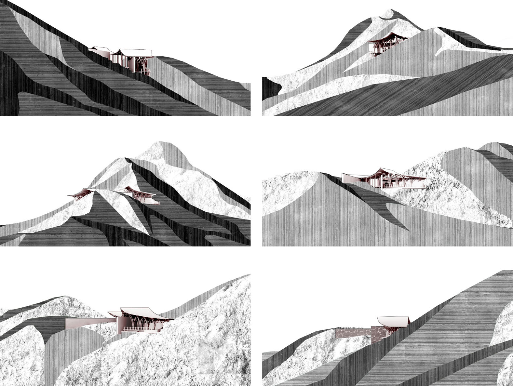
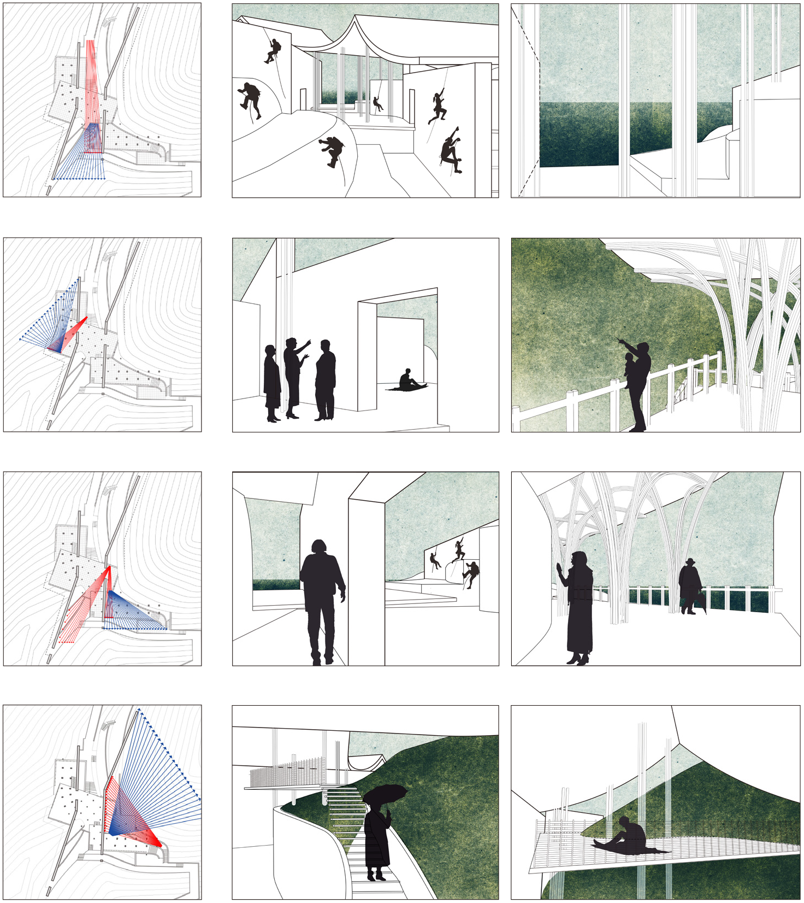

Pavilion in Hill
This pavilion serves as a Moutain Club. The whole design emphasizes on creating a series of feelings for people by controlling their line of sight using walls and columns. Tourists will enjoy a much more open scenery after the initial sight obstruction.

Inspiration from Ancient Chinese Paintings
I used the mountain to create a similar image of Chinese ancient paintings. From every angle, people cannot see the whole pavilion but a little part of it, which will direct their sight as well as attract their interests.
Sightline and Space
The plan and roof of this pavilion are carefully designed to create strong contrasts between different perspectives. I hope to increase people's awareness of surronding natural environment by manipulaing their views.
